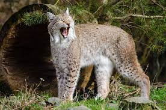

Állatkertünk felújítása befejeződött!
Állatkerti állományunk bővült!
Peti a viziló nem rég került be vadonatuj állatkertünkbe továbbá csalkazott hozzá Mango a maki majom és foltos a hiúz.

Hasznos infok a vizilóvakról:
A nílusi víziló (Hippopotamus amphibius) az emlősök (Mammalia) osztályának párosujjú patások (Artiodactyla) rendjébe, ezen belül a vízilófélék (Hippopotamidae) családjába tartozó faj.
- Nevük ellenére nem a lovak a legközelebbi rokonai, de nem is a disznófélék, bár sokáig a legtöbben így vélték, egyebek közt a bikák röfögésre emlékeztető hangja miatt.
- A DNS-ek összehasonlításából meglepetésre kiderült, hogy legközelebbi rokonaik a cetek (Cetacea); emiatt manapság a vízilovakat és a ceteket a Whippomorpha nevű alrendbe foglalják össze.
- Még meglepőbb azonban, hogy Ernst Haeckel 1866-ban kiadott törzsfája a vízilovakat a cetek közeli rokonaiként ábrázolja. Máig sem tudni, Häeckel hogyan jutott erre a (helyes) következtetésre.
Hasznos infok a hiuzról:

A hiúz (Lynx) a ragadozók rendjébe tartozó macskafélék családjának egyik neme. A nembe négy faj tartozik. Az eurázsiai hiúz (Lynx lynx) Európa legnagyobb macskaféléje.
A hiúzfajok elterjedési területe egykor az északi félteke szárazföldjeinek tekintélyes hányadát magába foglalta, manapság Ázsia bizonyos területein, Alaszkában, Kanadában és az USA nyugati területein, valamint Európában honos, de a legtöbb területen ritka, gyér az állománya
Éjszakai ragadozó, különféle madarak, kisrágcsálók éppúgy szerepelnek étlapján, mint őzek, rókakölykök, szarvasborjak vagy vadmalacok.